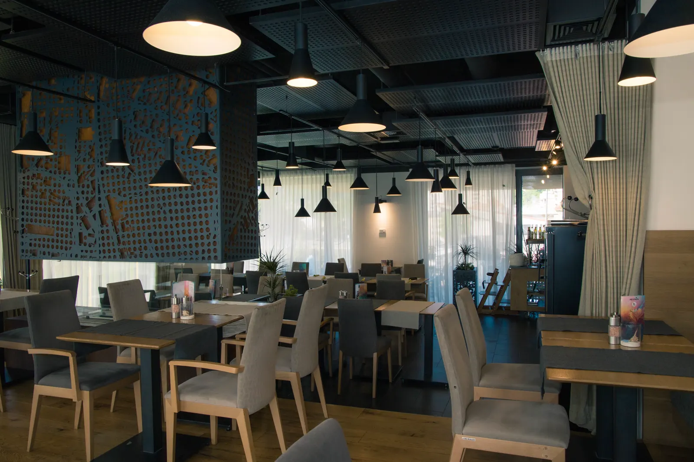

Restavracija in kavarna K5, Trbovlje: trije predlogi prenovljene spletne strani
Vsi trije predlogi uporabljajo besedila, jedilni list in fotografije z obstoječe strani k5.si ter podatke iz poslovnega registra. Razlikujejo se v postavitvi, pisavah in barvah. Izberite smer, podrobnosti uskladimo skupaj.

1 · Jedilni listSvetla, uredniška: serifni naslov ob fotografiji jedilnice, trije K5 kot kartice, jedilni list s pikčastimi vodili, malice, dvorana, catering.

2 · ŠankTemna, šankovska: celozaslonska fotografija šanka s kredno tablo, velike številke, vodoravna galerija lokala, jedilni list kot kartice.

3 · Zeleno sredi mestaPlakatna: ogromen naslov z označevalcem, mozaik fotografij z nalepkami, oštevilčeni razdelki, jedilni list kot preglednica, črn kontakt.